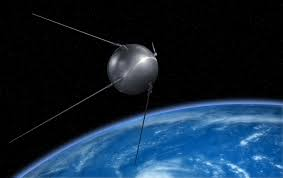
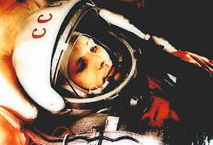
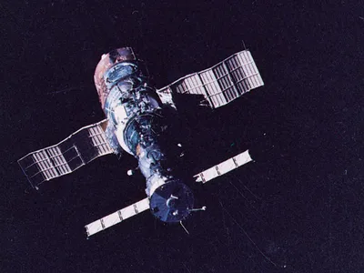
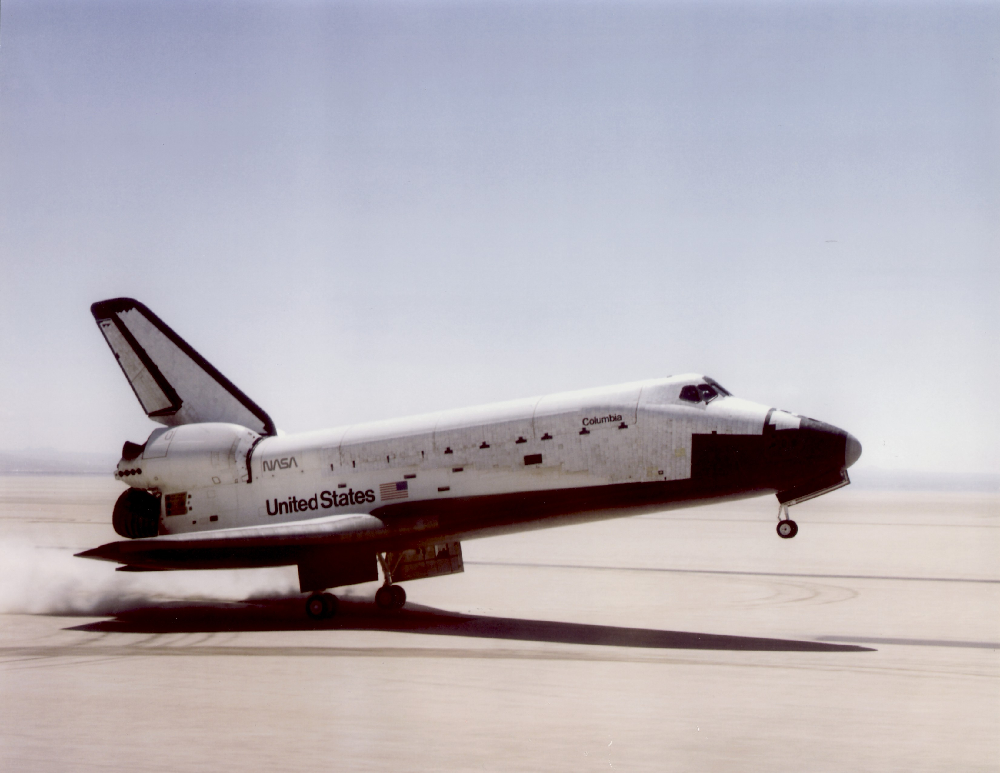
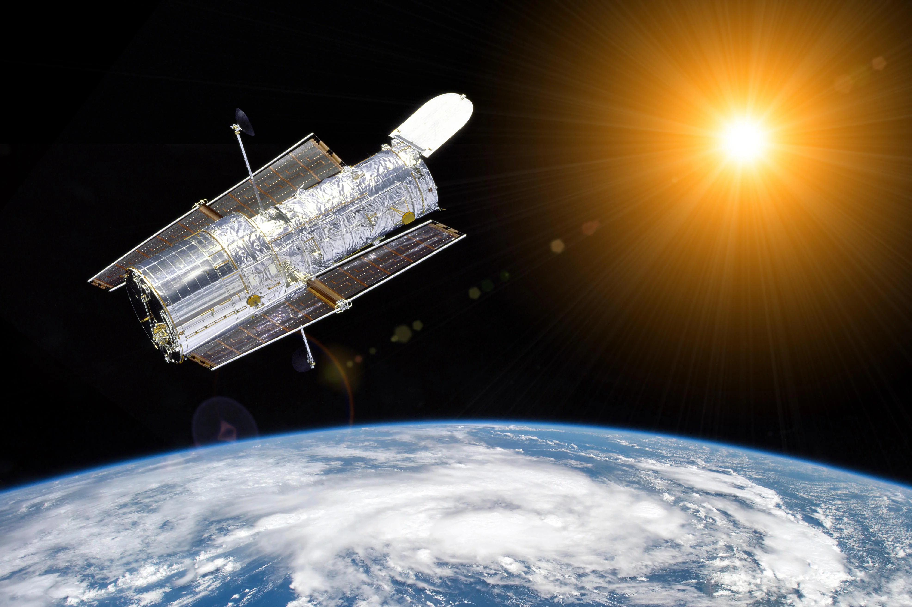
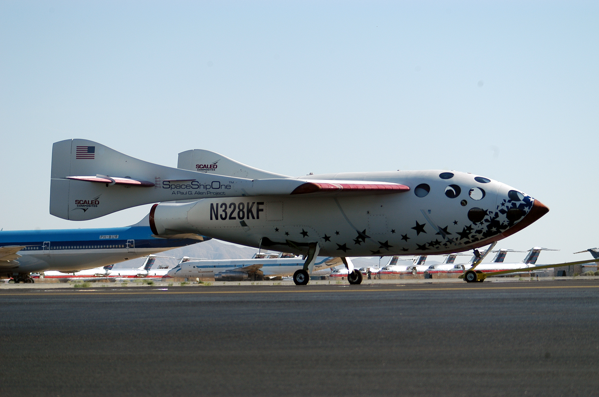
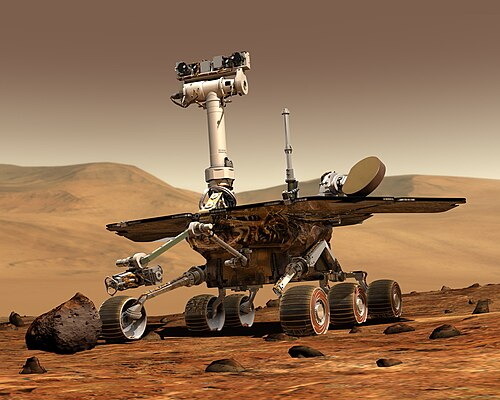

1957
Sputnik 1

Dit was de allereerste satelliet in de ruimte. Het bewees dat mensen objecten rond de aarde konden laten draaien en startte de ruimtewedloop tussen landen.
1961
Eerste mens in de ruimte

Gagarin was de eerste mens die de aarde vanuit de ruimte zag. Zijn vlucht liet zien dat mensen in de ruimte konden overleven en reizen.
1969
Maanlanding

Astronauten landden op de maan en verzamelden daar stenen en informatie. Het was een van de grootste prestaties in de geschiedenis van de mens.
1971
Salyut 1

Dit was het eerste ruimtestation waar astronauten langere tijd konden verblijven. Hierdoor werd onderzoek in de ruimte veel uitgebreider.
1981
Space Shuttle

De Space Shuttle kon meerdere keren gebruikt worden. Dit maakte ruimtevluchten praktischer en goedkoper dan voorheen.
1990
Hubble telescoop

Hubble maakte zeer scherpe foto’s van sterren en sterrenstelsels. Hierdoor leerden wetenschappers veel meer over het heelal.
1998
ISS

Het ISS is een groot project van meerdere landen. Astronauten doen er samen experimenten en wonen er tijdelijk.
2004
SpaceShipOne

Voor het eerst stuurde een privébedrijf een bemand voertuig de ruimte in. Dit opende de deur naar commerciële ruimtevaart.
2012
Curiosity

Curiosity onderzoekt de bodem en het klimaat van Mars. Het helpt wetenschappers begrijpen of er ooit leven mogelijk was op die planeet.
2020
SpaceX

Bedrijven spelen nu een grote rol in ruimtevaart. Dit maakt ruimte reizen vaker mogelijk en misschien in de toekomst ook voor gewone mensen.